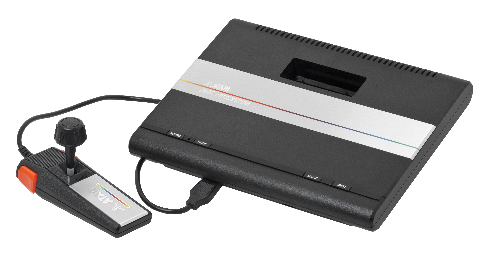

Tecnologia
Bem-vindo à emocionante jornada pelo universo da tecnologia das décadas de 80 e 90. Este é um período que testemunhou transformações incríveis no mundo da eletrônica, da informática e das comunicações, moldando o futuro de maneiras que nunca poderíamos imaginar. Durante essa época, a revolução da informação estava apenas começando, e dispositivos inovadores, como computadores pessoais, videogames, telefones celulares e muito mais, estavam surgindo e se tornando parte integrante de nossas vidas cotidianas. Navegue por esta seção para explorar as tecnologias que definiram uma era, desde os pioneiros PCs e consoles de videogame até os primeiros passos da Internet. Prepare-se para uma viagem no tempo, relembrando os marcos tecnológicos que moldaram nosso presente e inspiraram o futuro.
Anos 80
Computadores
Os anos 80 foram uma época emocionante para a tecnologia de computação. Durante essa década, testemunhamos o surgimento dos primeiros computadores pessoais acessíveis, que abriram as portas para a revolução digital. Antes disso, os computadores eram em grande parte mainframes e minicomputadores utilizados principalmente em ambientes corporativos e acadêmicos. No entanto, os anos 80 viram a popularização de máquinas que podiam ser usadas em casa, dando origem à era dos computadores pessoais. Nesta seção, exploraremos os computadores icônicos dos anos 80, como o Apple II, o IBM PC, o Commodore 64 e muitos outros. Vamos mergulhar na história dessas máquinas, suas especificações técnicas inovadoras para a época e como elas ajudaram a moldar a computação moderna. Prepare-se para uma viagem nostálgica ao passado, quando os computadores pessoais eram apenas sonhos se tornando realidade.
Commodore VIC-20 (1980)
O Commodore VIC-20, lançado em 1980, é um dos computadores pessoais mais notáveis dessa época. Ele é considerado o primeiro computador pessoal colorido e acessível, vendido por menos de 300 dólares na época. Aqui estão alguns detalhes sobre o VIC-20:
Especificações Técnicas: O VIC-20 era alimentado por um processador MOS Technology 6502 de 8 bits e tinha 5 KB de memória RAM. Era capaz de exibir até 22 cores em uma resolução de 176x184 pixels.
Software: O VIC-20 vinha com um interpretador BASIC na ROM, o que o tornava amigável para programadores e entusiastas iniciantes. Além disso, tinha suporte para jogos e aplicativos educacionais.
Popularidade: O VIC-20 ganhou popularidade como uma alternativa acessível ao Apple II. Foi um sucesso nas lojas de eletrônicos e expandiu o mercado de computadores pessoais.
Legado: Embora não seja tão lembrado quanto outros computadores da época, o VIC-20 teve um impacto significativo na popularização dos computadores pessoais. Ele estabeleceu um modelo de computador acessível para o público em geral e preparou o terreno para o sucesso futuro da Commodore com o Commodore 64.
O Commodore VIC-20 é um marco importante na história dos computadores pessoais e é lembrado por sua acessibilidade e contribuição para tornar os PCs parte integrante de nossas vidas cotidianas.
Curiosidade!
O Commodore VIC-20 era conhecido por ser um dos primeiros computadores pessoais com capacidade de cor, mas sua paleta de cores era limitada a 16 cores fixas. No entanto, os entusiastas de tecnologia descobriram um truque criativo para expandir as opções de cores do VIC-20. Eles perceberam que, ajustando cuidadosamente as configurações de cores no momento certo durante a inicialização do computador, era possível criar novas combinações de cores. Esse processo, conhecido como "truque da paleta de cores do VIC-20", permitia que os usuários obtivessem até 128 cores diferentes em suas telas, um feito impressionante para a época. Essa descoberta levou a criações gráficas mais vibrantes e jogos com visuais mais atraentes no VIC-20 e demonstrou a criatividade da comunidade de usuários desses primeiros computadores pessoais.
Sinclair ZX Spectrum (1982)
O Sinclair ZX Spectrum, lançado em 1982, é um dos computadores pessoais mais emblemáticos da década de 80, especialmente no Reino Unido. Aqui estão alguns detalhes sobre o ZX Spectrum:
Especificações Técnicas: O ZX Spectrum estava disponível em diferentes modelos, com 16 KB ou 48 KB de memória RAM. Ele usava um processador Z80 de 8 bits e apresentava gráficos com uma resolução de 256x192 pixels em 8 cores.
Teclado de Membrana: O ZX Spectrum tinha um teclado de membrana, o que significava que as teclas eram sensíveis ao toque, mas não eram muito duráveis. Isso levou a um estilo de digitação característico e às vezes demorado.
Jogos e Software: O ZX Spectrum era conhecido por sua vasta biblioteca de jogos e software, muitos dos quais eram distribuídos em fitas cassete. Títulos como "Manic Miner" e "Jet Set Willy" eram extremamente populares.
Popularidade: O ZX Spectrum foi um dos computadores mais vendidos na década de 80, especialmente no Reino Unido. Ele desempenhou um papel importante na introdução de computadores pessoais nas casas das pessoas.
Legado: O ZX Spectrum é lembrado com carinho por sua comunidade de fãs dedicada. Até hoje, há entusiastas que continuam a desenvolver jogos e software para este icônico computador.
O Sinclair ZX Spectrum é um exemplo clássico da era dos computadores pessoais dos anos 80 e é lembrado por sua contribuição para a popularização da computação doméstica.
Curiosidade!
O ZX Spectrum é conhecido por sua paleta de cores distintiva e limitada, que incluía cores brilhantes como azul, vermelho e amarelo. No entanto, uma das cores mais famosas do ZX Spectrum é o "azul claro" ou "azul-ciano". Essa cor era uma das cores padrão do computador e era frequentemente usada em jogos e aplicativos.
A curiosidade aqui é que o "azul claro" do ZX Spectrum era tão icônico que muitas vezes era associado a experiências de jogo memoráveis e gráficos vibrantes. Além disso, devido às limitações da paleta de cores do ZX Spectrum, os desenvolvedores eram criativos na forma como usavam o "azul claro" para criar detalhes e cenários impressionantes nos jogos. Assim, essa cor específica tornou-se um símbolo reconhecível para os entusiastas do ZX Spectrum e é lembrada com carinho como parte da experiência única de usar esse computador pessoal clássico.
Commodore 64 (1982)
O Commodore 64, frequentemente abreviado como C64, é um dos computadores mais icônicos e populares da década de 80. Ele foi lançado em 1982 e se destacou por vários motivos:
Especificações Técnicas: O Commodore 64 foi alimentado pelo processador MOS Technology 6510 de 8 bits e possuía 64 KB de memória RAM. Ele era capaz de exibir gráficos coloridos com uma resolução de 320x200 pixels e tinha uma paleta de cores impressionante para a época.
Enorme Biblioteca de Jogos: Uma das razões para a popularidade massiva do C64 foi sua vasta biblioteca de jogos. Inúmeros títulos de sucesso, como "Boulder Dash," "Pitfall!," "The Bard's Tale," e muitos outros, foram lançados para o sistema.
Som Distinto: O Commodore 64 era conhecido por seu som distintivo, que era gerado por um chip SID (Sound Interface Device). Esse chip produzia músicas e efeitos sonoros avançados para jogos e aplicativos.
Acessibilidade: O preço acessível do C64 o tornou acessível para muitas famílias, tornando-o um dos computadores pessoais mais vendidos da história.
Demografia Ampliada: O C64 atraiu uma ampla demografia, desde jogadores até entusiastas de programação, e foi uma plataforma popular para aprender programação de computadores.
Legado Duradouro: Mesmo décadas após seu lançamento, o Commodore 64 continua sendo lembrado com carinho e é uma parte importante da história dos computadores pessoais.
O Commodore 64 é um ícone da era dos computadores dos anos 80 e é lembrado por sua impressionante capacidade gráfica, som cativante e vasta biblioteca de jogos, que proporcionaram horas de entretenimento para muitos usuários.
Curiosidade!
O Commodore 64 é conhecido por ser um dos computadores pessoais mais vendidos da história, mas o que muitos não sabem é que ele também tinha uma forte presença na cena de música eletrônica dos anos 80. O motivo? O icônico chip de som SID (Sound Interface Device) que equipava o C64.
O chip SID era capaz de produzir uma ampla gama de sons e efeitos sonoros, tornando-o um dos primeiros sintetizadores de som digital acessíveis. Isso atraiu a atenção de músicos e entusiastas de música eletrônica, que descobriram que o C64 poderia ser usado para criar músicas eletrônicas impressionantes.
O resultado foi uma cena de "chiptune" ou "SID music", na qual músicos exploraram as capacidades do chip SID para criar faixas musicais memoráveis. Algumas dessas músicas eram usadas em jogos para o C64, enquanto outras eram composições originais. Até hoje, músicos e fãs continuam a criar música SID, celebrando a influência duradoura do Commodore 64 na música eletrônica.
Assim, além de ser um computador pessoal incrivelmente popular, o Commodore 64 deixou sua marca na cena musical dos anos 80 e é lembrado por suas contribuições tanto para a computação quanto para a música.
Apple Macintosh (1984)

O Apple Macintosh, frequentemente chamado de Macintosh ou Mac, foi lançado em 1984 e é lembrado como um dos computadores mais revolucionários da história da computação pessoal. Aqui estão alguns aspectos importantes sobre o Macintosh:
Introdução do Mouse e da Interface Gráfica: O Macintosh foi um dos primeiros computadores pessoais a popularizar o uso do mouse e de uma interface gráfica do usuário (GUI). O sistema operacional, conhecido como Mac OS, tornou a interação com o computador muito mais intuitiva e visual.
Especificações Técnicas: O Macintosh original tinha 128 KB de memória RAM e usava um processador Motorola 68000 de 8/16 bits. Ele possuía uma tela de 9 polegadas em preto e branco com uma resolução de 512x342 pixels.
Publicidade Notável: O Macintosh ficou famoso por seu comercial de lançamento, conhecido como "1984," que foi exibido durante o Super Bowl. O comercial tinha uma mensagem distinta de rebelião contra o status quo e se tornou icônico.
Desenvolvimento Gráfico e Publicação: O Macintosh foi amplamente adotado por profissionais de design gráfico e publicação devido à sua capacidade de manipular imagens e texto com facilidade. Ele desempenhou um papel fundamental na revolução da indústria gráfica.
Legado: O Macintosh estabeleceu as bases para a linha de computadores Mac da Apple, que continua a ser popular até hoje. A abordagem da Apple à interface do usuário e ao design de hardware influenciou a indústria de tecnologia como um todo.
O Apple Macintosh é lembrado por sua contribuição para a popularização das interfaces gráficas e pelo impacto duradouro que teve na maneira como interagimos com os computadores.
Curiosidade!
O Macintosh original tinha um codinome interessante durante seu desenvolvimento. Antes de ser lançado como Macintosh, o projeto era conhecido internamente como "Projeto Lisa." Isso porque a Apple já estava trabalhando em outro computador, chamado Apple Lisa, que também estava em desenvolvimento na mesma época.
O Apple Lisa era um computador mais avançado e caro, destinado principalmente a uso comercial e profissional. No entanto, o Macintosh tinha como objetivo ser mais acessível ao público em geral, com um preço mais baixo. Durante o desenvolvimento, a equipe do Macintosh adotou uma abordagem inovadora, focando na simplicidade e na experiência do usuário.
O Macintosh eventualmente se tornou um sucesso estrondoso e superou o Lisa em popularidade. Enquanto o Lisa era impressionante em termos de recursos técnicos, o Macintosh se destacou por sua interface gráfica amigável e acessibilidade. Isso ilustra como a abordagem centrada no usuário e a simplicidade muitas vezes superam especificações técnicas avançadas quando se trata de tecnologia de consumo.
Assim, o codinome "Projeto Lisa" nos lembra das origens do Macintosh e da evolução da computação pessoal durante a década de 80.
IBM PC (1981)

O IBM Personal Computer, ou simplesmente IBM PC, foi lançado em agosto de 1981 e é frequentemente considerado como o computador que popularizou a arquitetura de computadores pessoais baseada em hardware padronizado. Aqui estão alguns aspectos importantes sobre o IBM PC:
Arquitetura Aberta: O IBM PC foi o primeiro computador pessoal a adotar uma arquitetura de hardware aberta. Isso significa que a IBM permitiu que outros fabricantes produzissem componentes compatíveis com o PC, incluindo placas-mãe, processadores e periféricos. Isso levou à padronização da arquitetura x86, que ainda é usada em muitos computadores hoje.
Sistema Operacional: O IBM PC foi originalmente lançado com o sistema operacional PC-DOS, desenvolvido pela Microsoft. Mais tarde, ele evoluiu para o MS-DOS. Isso marcou o início da parceria entre a IBM e a Microsoft, que eventualmente resultaria no sistema operacional Windows.
Especificações Técnicas: O IBM PC original tinha um processador Intel 8088 de 4.77 MHz, 16 KB de memória RAM expansível para 256 KB, e usava disquetes de 5.25 polegadas para armazenamento. A tela era geralmente monocromática.
Legado Duradouro: A arquitetura aberta do IBM PC e o sucesso do sistema operacional MS-DOS estabeleceram o padrão para a indústria de PCs. Isso permitiu que inúmeras outras empresas fabricassem computadores compatíveis, contribuindo para o crescimento da indústria de tecnologia pessoal.
O IBM PC é um marco importante na história da computação pessoal e ajudou a definir o padrão de compatibilidade de hardware e software que é amplamente adotado até hoje. Sua abordagem aberta e sua influência duradoura são testemunhos de seu impacto na indústria de tecnologia.
Curiosidade!
O IBM PC original, também conhecido como IBM 5150, não tinha uma unidade de disco rígido integrada. Os usuários dependiam de disquetes de 5.25 polegadas para armazenar seus dados e programas. As primeiras versões do IBM PC não tinham nem mesmo uma unidade de disquete interna; os disquetes eram inseridos em uma unidade externa. A ausência de um disco rígido integrado era comum nos primeiros PCs e é uma reminiscência das limitações de armazenamento da época.
Consoles
Adentre uma época dourada dos videogames com os "Consoles dos Anos 80". Esta década testemunhou o nascimento de algumas das plataformas mais icônicas da história dos jogos eletrônicos. De clássicos como o Atari 2600 e o Nintendo Entertainment System (NES) a sistemas menos conhecidos, mas igualmente fascinantes, como o ColecoVision, exploraremos o impacto revolucionário desses consoles e como eles moldaram o cenário dos jogos que conhecemos hoje. Junte-se a nós nesta jornada nostálgica pela era de ouro dos videogames dos anos 80.
Atari 2600
O Atari 2600, lançado em 1977 (embora tenha seu auge nos anos 80), é frequentemente considerado o console que popularizou os videogames em casa. Este sistema revolucionário trouxe os jogos eletrônicos para o ambiente doméstico de uma maneira sem precedentes. Com uma biblioteca de jogos diversificada e inovadora, o Atari 2600 permitiu que os jogadores experimentassem uma ampla gama de gêneros, desde ação até aventura e esportes, em suas próprias TVs.
Um dos jogos mais icônicos do Atari 2600 é o "Pac-Man", que trouxe o famoso comedor de pontos para as telas domésticas, embora com algumas limitações gráficas. Além disso, títulos como "Space Invaders", "Asteroids" e "Pitfall!" também contribuíram para a popularidade do console.
O Atari 2600 introduziu o uso de cartuchos, o que permitiu que os jogadores trocassem de jogo com facilidade. Esse conceito de expansão de biblioteca de jogos por meio de cartuchos se tornou uma característica fundamental de consoles posteriores.
Apesar da crise dos videogames de 1983, o Atari 2600 continua sendo um ícone dos anos 80 e um testemunho da paixão duradoura das pessoas pelos jogos eletrônicos. Seu legado vive até hoje, lembrando-nos da simplicidade e da diversão dos primórdios dos videogames em casa.
Curiosidade!
Você sabia que o famoso jogo "Pac-Man" para o Atari 2600 foi criticado por suas representações simplificadas e visuais menos impressionantes em comparação com a versão de arcade? Apesar disso, o jogo vendeu excepcionalmente bem e se tornou um clássico do Atari 2600, mostrando o poder da marca Pac-Man na época.
ColecoVision
O ColecoVision, lançado em 1982, foi um console de videogame que deixou sua marca nos anos 80. Conhecido por sua impressionante biblioteca de jogos e gráficos avançados para a época, o ColecoVision era uma plataforma popular para os entusiastas de videogames. Com uma grande variedade de títulos, desde arcade até jogos clássicos como Donkey Kong e Zaxxon, o console atraiu muitos jogadores. Ele também se destacou por seu periférico inovador, o "ColecoVision Expansion Module #1," que permitia aos jogadores jogar jogos de Atari 2600 em sua plataforma. O ColecoVision é lembrado como um dos consoles pioneiros na era dos videogames domésticos e por sua contribuição para a indústria dos jogos eletrônicos.
Curiosidade!
O ColecoVision é notável por ter introduzido a ideia de periféricos que expandiam a funcionalidade do console. Um deles, o "ColecoVision Expansion Module #2," permitia que o console funcionasse como um computador doméstico com teclado, mas essa expansão foi lançada tarde demais para competir efetivamente com outros computadores pessoais da época, como o Commodore 64.
Atari 5200
O próximo console dos anos 80 que vamos explorar é o Atari 5200, lançado em 1982 pela Atari, Inc. O Atari 5200 foi projetado para ser a sucessão do popular Atari 2600 e trouxe algumas melhorias notáveis. Com gráficos mais avançados e controles inovadores, o console prometia uma experiência de jogo de próxima geração. No entanto, apesar de sua tecnologia aprimorada, o Atari 5200 enfrentou desafios devido à falta de compatibilidade com os jogos do Atari 2600 e controles às vezes problemáticos. Apesar disso, o console ofereceu uma seleção diversificada de jogos, incluindo títulos populares como "Pac-Man" e "Galaxian," tornando-se uma parte memorável da era dos videogames dos anos 80.
Curiosidade!
Uma das características notáveis do Atari 5200 foi o seu design de controle inovador com um teclado numérico embutido. No entanto, os controles do Atari 5200 eram conhecidos por serem sensíveis demais e, muitas vezes, apresentavam problemas de resposta. Os jogadores tiveram que lidar com essas dificuldades, o que tornou o console notório pelos controles desafiadores.
Atari 7800
Lançado em 1986, o Atari 7800 foi a tentativa da Atari de recuperar sua posição no mercado de videogames após a queda do Atari 5200. O console tinha uma biblioteca de jogos que incluía títulos clássicos como "Ms. Pac-Man" e "Centipede," oferecendo uma experiência de jogo sólida para os fãs da Atari. O destaque do Atari 7800 era sua compatibilidade com jogos do Atari 2600, o que permitia que os jogadores desfrutassem de seus títulos favoritos mais antigos. No entanto, devido a desafios de marketing e competição acirrada, o Atari 7800 não conseguiu alcançar o sucesso de seus concorrentes e foi descontinuado em 1992.
Curiosidade!
O Atari 7800 foi projetado com uma tecnologia de gráficos avançada para sua época, com capacidade para exibir 256 cores simultaneamente. No entanto, devido à crise da indústria de videogames e ao lançamento tardio do console, muitos jogos que explorariam esses recursos avançados não foram lançados, e o console não conseguiu aproveitar totalmente seu potencial gráfico.
Vectrex
O Vectrex, lançado em 1982, se destaca como um console de videogame dos anos 80 notável por sua tela de vetores monocromática incorporada, que gerava gráficos distintos e nítidos. Diferenciando-se de seus contemporâneos, o Vectrex incluía controles integrados, como um joystick e botões, tornando-o autossuficiente para jogar. Embora tenha uma biblioteca de jogos relativamente pequena, títulos como "Mine Storm" e "Armor Attack" proporcionaram experiências únicas. Apesar de seu sucesso comercial limitado, o Vectrex deixou uma marca duradoura na memória dos entusiastas de videogames retrô, e muitos exemplares ainda funcionam hoje, demonstrando sua qualidade de construção notável.
Curiosidade!
Uma curiosidade intrigante sobre o Vectrex é que ele foi um dos poucos consoles da época a apresentar jogos em gráficos de vetor, em oposição aos gráficos de bitmap mais comuns. Isso significava que os jogos eram compostos por linhas e formas geométricas, resultando em gráficos distintos e nítidos, mesmo que monocromáticos. Esse estilo único de gráficos proporcionou uma experiência de jogo única e é um dos aspectos que tornam o Vectrex tão memorável entre os fãs de jogos retrô.